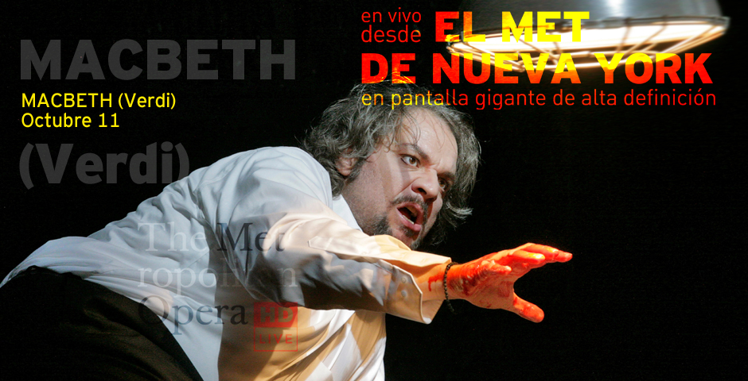

Macbeth (Verdi)
11 de Octubre - 11:55H Anna Netrebko se transforma valientemente al interpretar el dramático personaje Verdiano de Lady Macbeth, la ambiciosa y perversa pareja del condenado Barón escocés personificado por el barítono serbio Zeljko Lucic. La refrescante producción de Adrian Noble es protagonizada además por el gran barítono alemán René Pape como Banquo y en el rol del noble Macduff el tenor maltés Joseph Calleja. La dirección de la orquesta está bajo la batuta del maestro Fabio Luisi, director principal del MET.